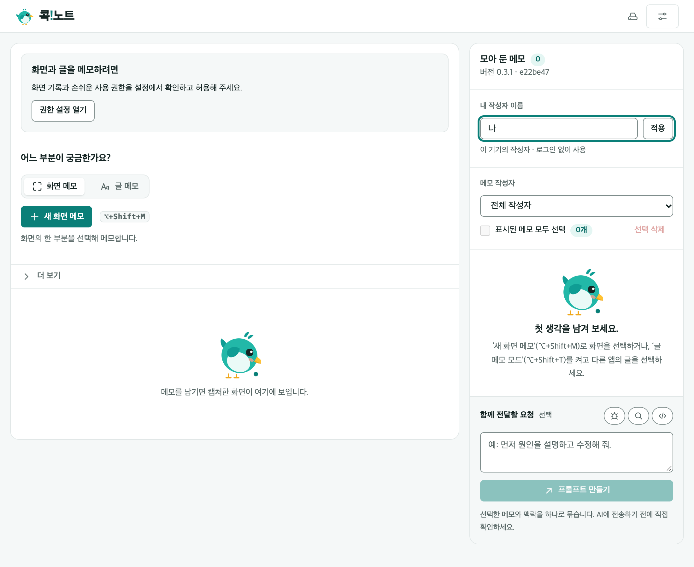
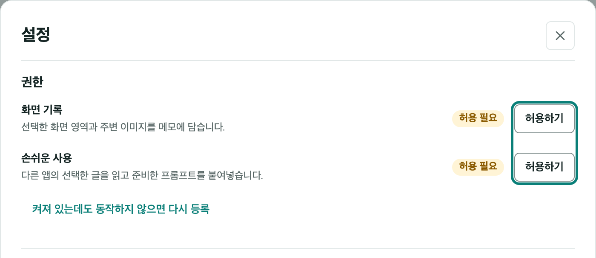
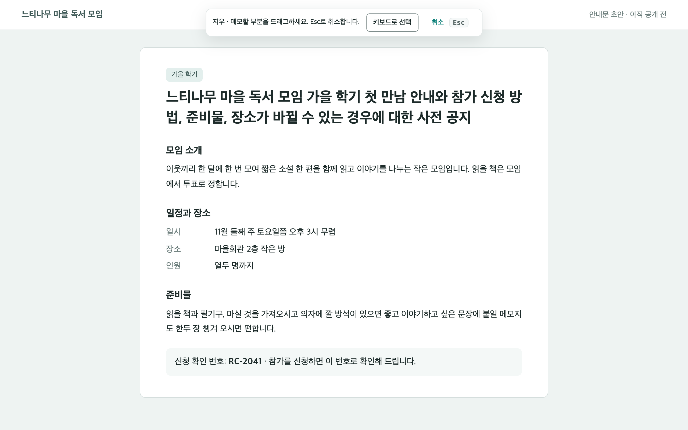
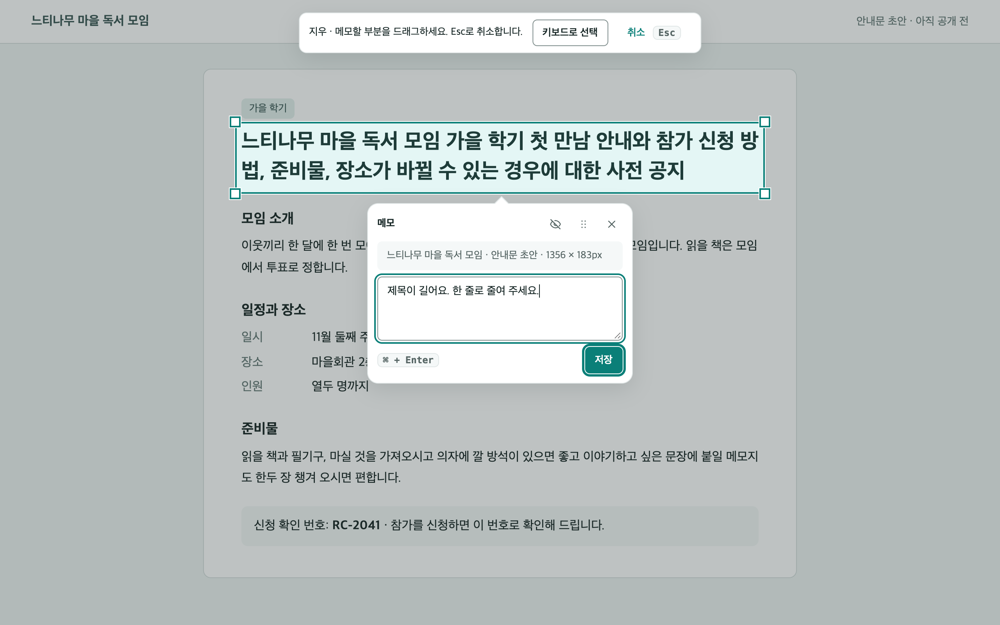
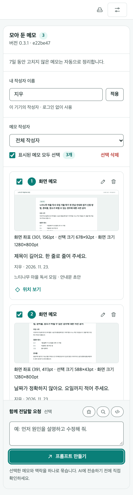
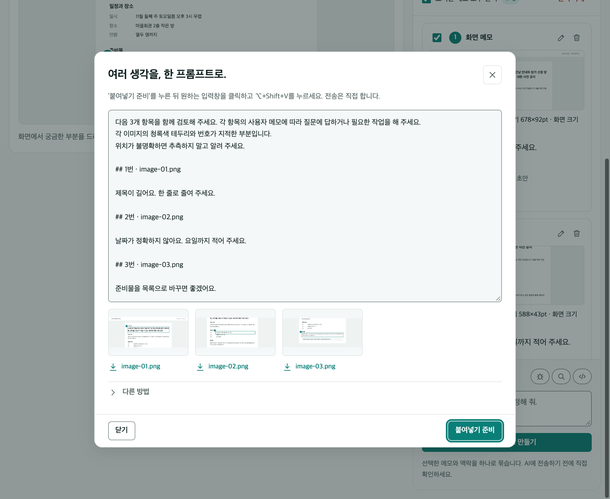
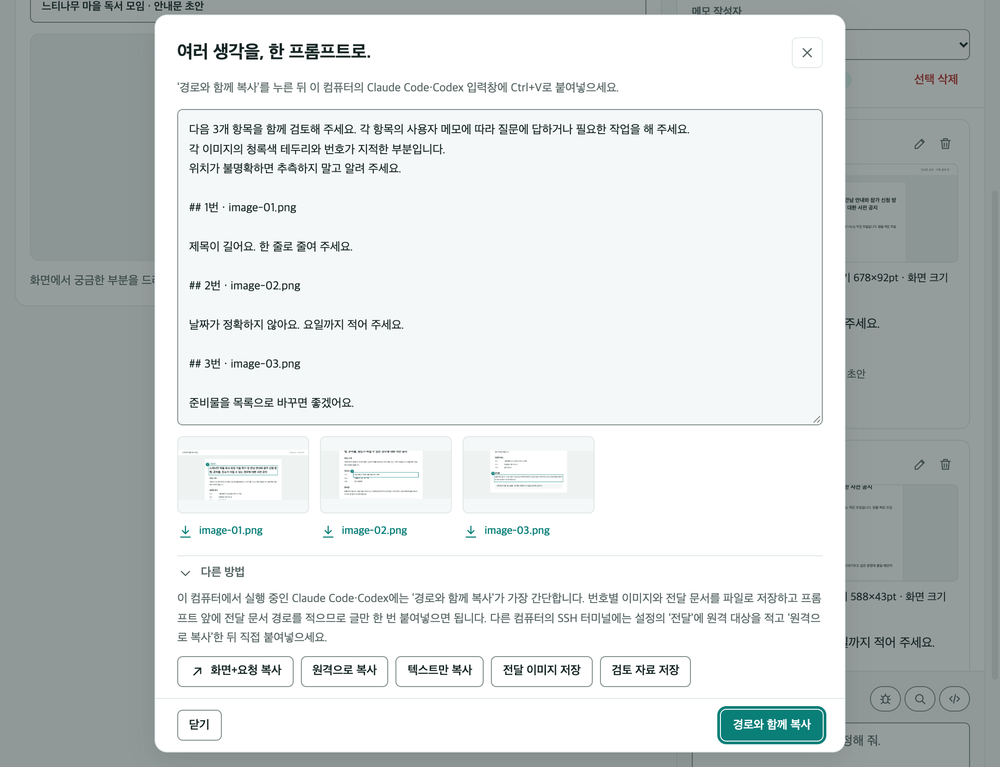
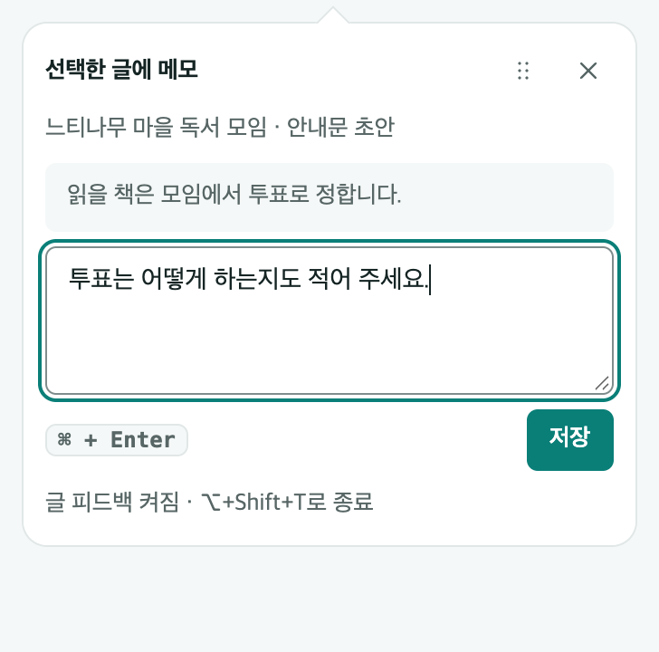
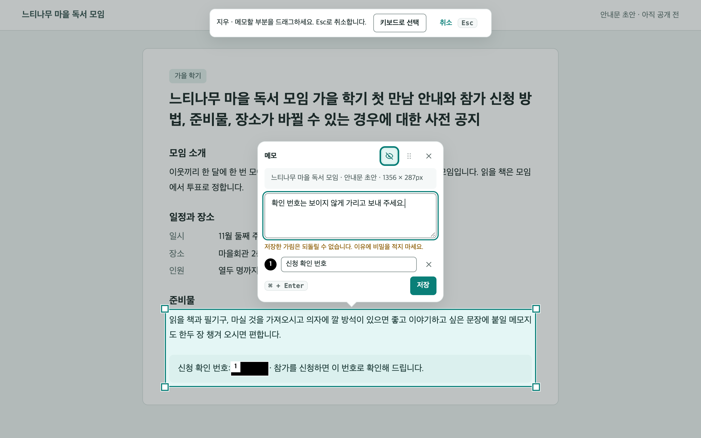

그림으로 따라 하기
콕!노트(PeckNote) 시험판을 설치한 뒤, 화면의 한 부분에 메모를 남기고 모은 메모를 AI에 보낼 요청 하나로 만들기까지를 앱 화면 그림으로 따라 합니다. 글로 된 설명과 단축키 표, 잘 안 될 때의 안내는 사용 방법에 있습니다. 설치와 첫 실행은 처음 실행할 때를 먼저 보세요.
그림은 0.3.1 앱의 화면에 예시 내용(가상의 마을 독서 모임 안내문과 메모 세 개, 작성자 ‘지우’)을 넣어 그린 것입니다. 창 테두리, 메뉴 막대·Dock·트레이와 다른 앱은 그리지 않았습니다. 청록색 테두리는 누를 곳을 가리키는 표시이며 앱의 일부가 아닙니다. 그림은 Windows라고 적은 것 말고는 Mac 화면이고, Windows에서는 글꼴이 조금 다르게 보입니다. 앱 안의 버튼 이름은 굵게 적었고, Mac에서 ⌥는 Option 키입니다.
처음부터 끝까지
앱이 설치되어 열려 있는 상태에서 시작합니다. 마지막에는 요청이 AI 입력창에 들어가 있고, 전송은 직접 누릅니다.
-
작성자 이름 정하기
메모 모음의 내 작성자 이름 칸(처음에는 ‘나’)에 이름을 적고 적용을 누릅니다. 이름은 메모의 작성자로 기록되며 로그인은 없습니다.

-
(Mac만) 두 가지 권한 허용하기
화면 기록과 손쉬운 사용을 허용해야 합니다. 메모 모음 위쪽의 ‘화면과 글을 메모하려면’ 안내에서 권한 설정 열기를 누르면 콕!노트의 설정 창이 열리고, 각 권한 옆의 허용하기로 진행합니다. 두 권한이 확인되면 안내가 사라집니다. 시스템 설정에서 하는 방법은 처음 실행할 때를 따르세요. Windows에서는 별도 권한이 필요하지 않습니다.

-
다른 앱에서 단축키 누르기
메모를 남길 화면(브라우저, 문서 등)을 앞에 두고 Mac은 ⌥+Shift+M, Windows는 Alt+Shift+M을 누릅니다. 메모 모음의 새 화면 메모 버튼으로도 시작할 수 있습니다.
-
정지된 화면에서 영역 드래그하기
단축키를 누른 순간의 화면이 정지 이미지로 나타나고, 위쪽에 ‘메모할 부분을 드래그하세요. Esc로 취소합니다.’라는 안내가 보입니다. 메모할 부분을 드래그해 사각형으로 고릅니다.

-
말풍선에 적고 저장하기
선택한 부분 옆에 메모 말풍선이 뜨고 바로 입력할 수 있습니다. 말풍선의 저장을 누르거나 Mac은 ⌘+Enter, Windows는 Ctrl+Enter를 누르면 말풍선이 닫히고 다음 메모를 이어서 할 수 있습니다. 취소하려면 Esc를 누릅니다.

-
반복하기
3~5번을 되풀이해 메모를 두세 개 더 만듭니다. 한 리뷰에는 메모를 30개까지 모을 수 있습니다.
-
메모 모음 열기
Mac은 Dock 아이콘을 누르거나 메뉴 막대의 콕!노트 표식에서 메모 모음을 고릅니다. Windows는 작업 표시줄 오른쪽의 트레이 아이콘을 오른쪽 클릭해 메모 모음을 고릅니다(아이콘이 보이지 않으면 숨겨진 아이콘 표시를 눌러 보세요). 저장한 메모가 번호 카드로 ‘모아 둔 메모’에 쌓여 있습니다.
-
보낼 메모 고르고 프롬프트 만들기
카드마다 체크 칸이 있고 처음에는 모두 선택되어 있습니다. 빼고 싶은 메모는 체크를 끕니다. 필요하면 함께 전달할 요청 칸에 AI에 바라는 일을 적고(선택 사항) 프롬프트 만들기를 누릅니다.

오른쪽 ‘모아 둔 메모’ 칸만 길게 잘라 보여 줍니다. 세 번째 메모는 목록을 넘기면 나옵니다. -
프롬프트를 확인하고 기본 버튼 누르기
‘여러 생각을, 한 프롬프트로.’ 창에 번호가 붙은 요청 글과 번호별로 선택 영역이 표시된 이미지가 나옵니다. 글은 그 자리에서 읽고 고칠 수 있으니 전달하기 전에 확인하세요. 아래에서 강조된 버튼 하나가 기본 전달 방법입니다. Mac은 붙여넣기 준비를 누릅니다.

Windows는 이미지가 있는 메모를 고른 경우 경로와 함께 복사를 누릅니다(글 메모만 골랐다면 기본 버튼은 텍스트만 복사입니다). 이 기본 방법은 같은 PC의 터미널에서 쓰는 Claude Code·Codex 같은 에이전트용입니다. 웹 채팅처럼 이 PC의 파일을 읽지 못하는 AI에는 다른 방법의 화면+요청 복사를 쓰세요.

Windows 화면 -
AI 입력창에 붙여넣기
Mac은 AI 입력창을 직접 클릭하고 ⌥+Shift+V를 누른 뒤 Option과 Shift 키에서 손을 뗍니다. Windows는 AI 입력창을 클릭해 Ctrl+V로 붙여넣습니다. 방법별 차이는 AI에 넘기는 방법에 있습니다.
-
확인하고 직접 전송하기
입력창에 이미지와 글이 모두 들어왔는지 확인하고, 전송은 직접 합니다. 콕!노트는 전송 키를 누르지 않습니다.
글에 메모하기 (Mac)
다른 앱의 문장을 드래그해 그 글을 메모에 담는 기능입니다. Mac에서만 쓸 수 있고, Windows에는 아직 없습니다. 이 기능에는 손쉬운 사용 권한이 필요합니다. 메모 모음 위쪽에서 글 메모를 고르고 글 메모 모드 켜기를 누르거나 ⌥+Shift+T를 누릅니다. 켠 뒤 브라우저나 문서 등에서 문장을 마우스로 드래그하면 그 옆에 선택한 글에 메모 말풍선이 뜹니다. 메모를 적고 저장(⌘+Enter)을 누르세요. 앱이 선택한 글을 알려 주지 않으면 말풍선이 뜨지 않으니, 이때는 위의 화면 메모를 쓰세요. 자세한 내용은 글에 메모할 때를 보세요.

가리기
메모에 개인 정보가 찍혔다면 저장하기 전에 가릴 수 있습니다. 말풍선 위쪽의 가리기 버튼(빗금이 그어진 눈 모양)을 켜고 화면에서 가릴 부분을 드래그하면 그 부분에 번호가 붙고, 말풍선에 ‘무엇을 왜 가렸는지’ 적는 칸이 생깁니다. 저장 전에는 각 칸 옆의 지우기 버튼(X 모양)으로 가림을 없앨 수 있습니다.
저장한 가림은 되돌릴 수 없습니다. 가린 부분의 이미지는 저장할 때 검게 지워집니다. 이유 칸의 글은 가려지지 않고 쓴 그대로 저장·전달되므로 비밀 자체를 적지 마세요.

더 알아보기
단축키 표, 영역 다시 고르기, 다른 컴퓨터의 에이전트에 넘기기, 메모 관리와 잘 안 될 때의 안내는 사용 방법에 있습니다.